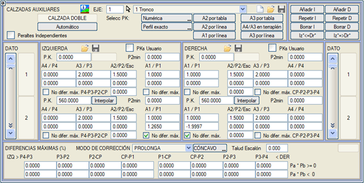
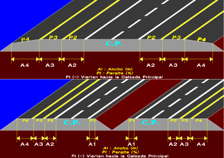
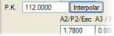
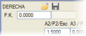
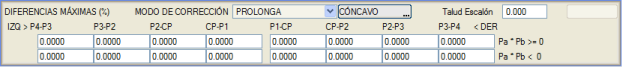
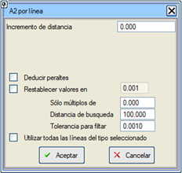
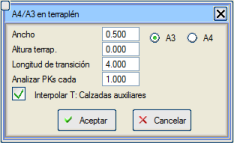

| |
|
YARDIMCI PLATFORMLAR
|
Genel Bilgiler
Enine Eğimlerin Davranışı ve Sınırlandırılması Çizgiye Göre Genişlikler Tabloya Göre Genişlik Kuralı Dolguda A4/A3 Bağımsız Deverler Genel Bilgiler ISTRAM®/BIM, bağımsız ve farklı genişlik ve dever kurallarına sahip sekiz adede kadar yardımcı platformun tasarımına olanak tanır. 
Bu platformlar sağ ve sol olmak üzere her iki taraf için 1'den 4'e kadar numaralandırılır. 1 numaralı platform sadece bölünmüş yollarda bulunur, çünkü bir iç platformdur. 2 numaralı platform, ana platforma (banket) en yakın dış yardımcı platformdur. 3 ve 4 numaralı platformlar genellikle bisiklet yolları, park cepleri vb. için ayrılmıştır. 
Tanımlama, eksenin farklı noktalarında çeşitli yardımcı platformların genişlik ve deverlerine değerler verilerek yapılır. Bir veri iki ardışık nokta arasında değişirse, aralarında doğrusal bir değişim olduğu varsayılır. Gerekirse veriler dışa doğru uzatılır (ekstrapolasyon yapılır), bu nedenle tek bir veri yeterlidir. Ara verilerde, Ai ve Pi değerlerini, yani genişlikleri ve eğimleri, ara kilometrenin önceki ve sonraki verileri arasında enterpole edebiliriz. Grafik pencerede, mevcut bir veri noktasındaki 8 platformun her birinin genişlik A ve enine eğim P değerleri görünür. [+] [Veri] [-] düğmeleri, [Ekle] ve [Tekrarla] düğmeleriyle oluşturulabilen veya [Sil] tuşuyla silinebilen herhangi bir başka veri noktasına gitmeyi sağlar. Ana platform ile A2 banketi arasında dikey bir basamak (Esc) oluşturmak mümkündür. Basamağın yüksekliği, A2 banketinin eğiminin altına girilir: A2/P2/Esc. Basamağın altına (kod 2 kaplama kenarının altındaki veya üstündeki nokta) kod 10 verilir. Bu basamağa Basamak Şevi kutucuğu aracılığıyla bir şev verilebilir. [Otomatik] düğmesi, eksenin başlangıcına ve sonuna karşılık gelen iki veri oluşturur; A1 platformları için 1 metre, A2 platformları için 2,5 metre genişlik değerleri ile. Yardımcı platformların tanım kuralı, menünün üst kısmında yer alan ikonlarla, .aux uzantılı dosyalara [Kaydet]  ve [Yükle] ve [Yükle]  komutlarıyla kaydedilebilir ve geri yüklenebilir. komutlarıyla kaydedilebilir ve geri yüklenebilir.Kullanıcı KM'leri seçeneği, kilometrelerin kullanıcı tanımlı değerlerle girilmesine olanak tanır. Bu seçenek etkinleştirilip devre dışı bırakılabilir ve durumu .vol dosyasına kaydedilir. Yardımcı platformların ve trotuarların tanım kilometreleri, bağımsız .pk dosyalarına kaydedilebilir veya yüklenebilir . Böylece kilometre tanımı bir taraftan diğerine, trotuarlardan yardımcı platformlara ve tersi yönde aktarılabilir.İlk sütunda kilometreyi içeren herhangi bir .pk* dosyasından yüklenebilirler. Bir kilometre dosyası yüklendiğinde, geri kalan değerler (genişlikler, eğimler, yükseklikler vb.) ilk veriden kopyalanır. Trotuarlar durumunda, hiç veri yoksa sıfırdan başlatılır. Enine Eğimlerin Davranışı ve Sınırlandırılması Her bir yardımcı platformun A genişliğinin altında, o platform için bir P eğimi (%) belirtilebilir. Bu eğim, o yardımcı platform ile bitişiğindeki platform arasında izin verilen maksimum eğim farkına bağlı olacaktır. 
Diyalog kutusunun alt kısmında yer alan MAKSİMUM FARKLAR (%) tablosu, bitişik platformların enine eğimleri arasında izin verilen bu maksimum farkı tanımlamayı sağlar. Özellikle, iki platform arasındaki izin verilen maksimum değer 0 ise, daha düşük öncelikli olan her zaman diğerinin uzantısında görünür ve onun dever kuralını takip eder. Bu nedenle, bir platform önceki platformun deverini takip ediyorsa, dever kuralını tekrarlamak gerekmez, sadece genişliğini ve maksimum fark kutucuğuna 0 girmek yeterlidir. Bir yardımcı platform izin verilen maksimum eğim farkını aştığında, düzeltme modu devreye girer. Bu mod şunlar olabilir:
Bitişik platformla olan dever farkına uyulur, ancak hiçbir zaman minimum eğimin altına düşemez.
Örnek: Nominal %5 eğimli banketler. Düzeltme modu [KIRILMA + MİNİMUM EĞİM] [İÇBÜKEY OLMAYAN] Minimum eğim %1, Maksimum fark %7
Yardımcı platformların genişlik ve eğim kuralı belirlendikten sonra, belirli bir kesimde, bir yardımcı platform ile bitişiğindeki arasında bir içbükeylik oluşabilir ve bu durum o bölgede bir drenaj sistemi öngörülmemişse su birikmesi sorununa yol açabilir. Bunu önlemek için, program varsayılan olarak [İÇBÜKEY OLMAYAN] düzeltme modunu ayarlar. Bu mod, bir platformun bir öncekiyle oluşturduğu açının içbükey olmasını engeller ve eğer böyle bir durum oluşursa, onu uzantı olarak yerleştirir. Her bir veri için ilgili Maks. fark yok onay kutucuğunu etkinleştirerek, enine eğim ve içbükeylik farkları tarafından dayatılan sınırlamaları atlamak mümkündür. Bu seçenek, kullanıcının belirli bir bölgede yardımcı platformların genel davranışını değiştirmesine olanak tanır ve yardımcı platformlar 2, 3 ve 4 için özel bir kontrol ile bölünmüş yol eksenleri durumunda yardımcı platform 1 (iç banket) için bağımsız bir kontrol bulunur. P2min değeri, yukarıdakilerin tümünden bağımsız olarak, banket 2 için minimum bir eğim sağlar. Örnek: Dış banketin dışa doğru %4 eğime sahip olması, ana platformla maksimum %4 eğim farkı olması, eğim değişiminin içbükey olmaması ve düzeltme modunun uzantıda olması istenmektedir. Ayrıca, eğimin her zaman dışa doğru olması (ana platform içe doğru aksa bile) ve minimum %2 değerinde olması gerekmektedir. Yani:
Bitişik platformlar arasındaki maksimum enine eğim farkı değeri, platformların aynı yöne akıp akmadığına bağlı olarak iki farklı değere ayrılır:
Çizgiye Göre Genişlikler [A2 Çizgiye Göre] düğmesi, kenarlarını temsil eden plan çizgilerinden yola çıkarak ilk dış banket 2'nin genişliklerini aynı anda hesaplamayı sağlar. Bu seçenek, ana platform genişlikleri durumunda olduğu gibi çalışır ve seçilen çizginin her bir tepe noktası için bir veri oluşturur. Bu seçenek, sonuçta elde edilen mesafeye bir artış eklemeye de olanak tanır (pozitif değer çizginin sağına, negatif değer soluna bir artış anlamına gelir). 3 ve 4 numaralı platformlarda önceden bulunan veriler değerlerini korur, program bu seçenekle türetilen yeni kilometrelerde enterpolasyon yapar. Eğer  Deverleri Türet seçeneğini etkinleştirirsek, bu yardımcı program çizginin kotunu kullanarak deverleri de hesaplayacaktır. Bu seçeneğin etkili olması için, AP-P2 veya P2-AP değerlerini 1000 olarak ayarlamak ve içbükey modunu etkinleştirmek gerekir. Değerleri geri yükle seçeneği, eklenen çizginin ilk ve son noktasından itibaren belirli bir mesafede önceden var olan genişlik değerlerini geri yüklemeyi sağlar. Deverleri Türet seçeneğini etkinleştirirsek, bu yardımcı program çizginin kotunu kullanarak deverleri de hesaplayacaktır. Bu seçeneğin etkili olması için, AP-P2 veya P2-AP değerlerini 1000 olarak ayarlamak ve içbükey modunu etkinleştirmek gerekir. Değerleri geri yükle seçeneği, eklenen çizginin ilk ve son noktasından itibaren belirli bir mesafede önceden var olan genişlik değerlerini geri yüklemeyi sağlar.Arama mesafesi seçeneği, daha uzaktaki noktaların göz ardı edileceği belirli bir mesafeyi tanımlamaya olanak tanır. Filtreleme toleransı seçeneği, genişlik değerini bu toleransla yuvarlamaya olanak tanır ve bir kesimde aynı genişlik değerine sahip ardışık ikiden fazla veri olmasını önleyerek her kesimin sadece ilk ve son verisini bırakır. Seçilen tipteki tüm çizgileri aynı anda kullanma imkanı. Benzer şekilde, banket genişliğini haritada mevcut bir çizgiye göre tanımlamak için [A3 Çizgiye Göre] ve bölünmüş yol eksenleri durumunda, banket genişliğini haritada mevcut bir çizgiye göre tanımlamak için [A1 Çizgiye Göre] seçeneği de mevcuttur (bu çizgi kod 1'den geçecektir). Tabloya Göre Genişlik Kuralı [A2 Tabloya Göre] ve [A3 Tabloya Göre] düğmeleri, sırasıyla 2 ve 3 numaralı yardımcı platformlar için, ana platformlar durumunda olduğu gibi bir .tsa genişletme tablosu kullanarak otomatik olarak genişletmeleri belirlemeyi sağlar. Bu seçeneğin tipik bir kullanımı, bu yardımcı platformlardan birinin aslında ana platform görevi gördüğü, ancak çeşitli nedenlerle bu şekilde beyan edilemediği durumlardır. Diğer yardımcı platformların genişlik değerleri ve eğimler ilk veriden kopyalanır. Dolguda A4/A3 Aşağıdaki parametrelere göre, sadece dolgu bölgelerinde yeni bir yardımcı platform (A3 veya A4) eklemeyi sağlar:
Her bir platform için aşağıdaki iki araca sahibiz:
Deverleri uyguladığımız noktanın görüntülenmesi için ekranda her iki tarafın mevcut verilerinin kilometresiyle çakışan vurgulanmış bir çizgi gösterilir: |